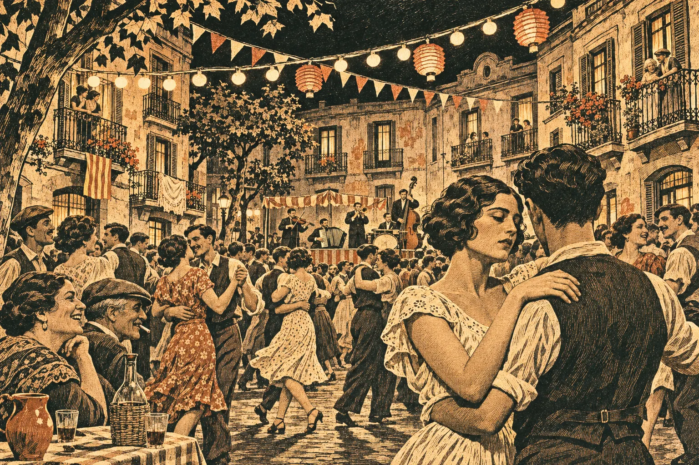
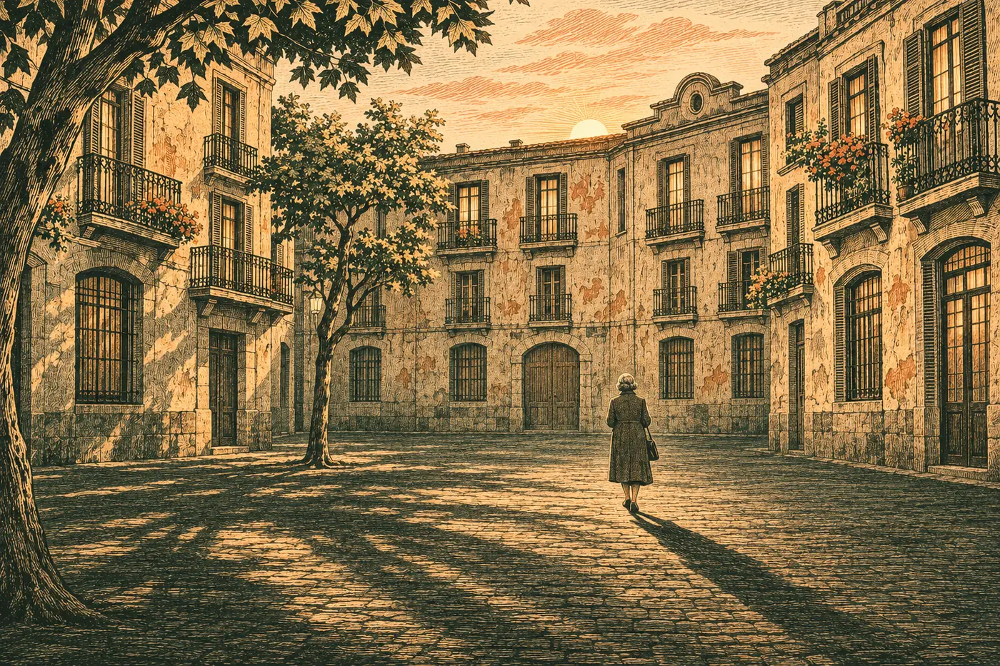

Reportatge interactiu
Em dic Natàlia
Identitat, silenci i supervivència
Un reportatge interactiu sobre La plaça del Diamant, de Mercè Rodoreda.

La pregunta
El perfil
Cronologia
Galeria de gravats
Entrevistes
Testimonis

Conclusió personalTorna al primer ball